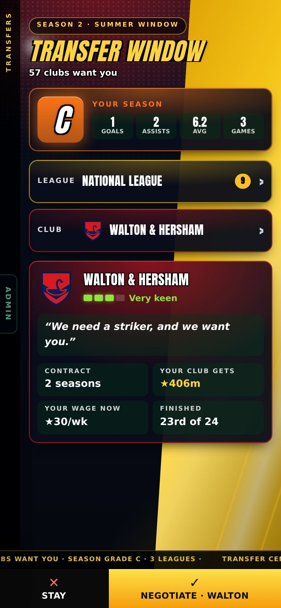
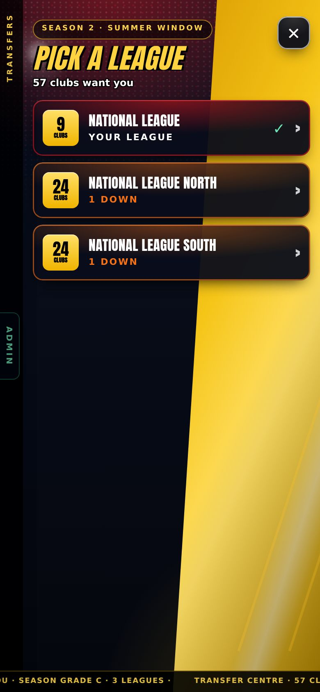
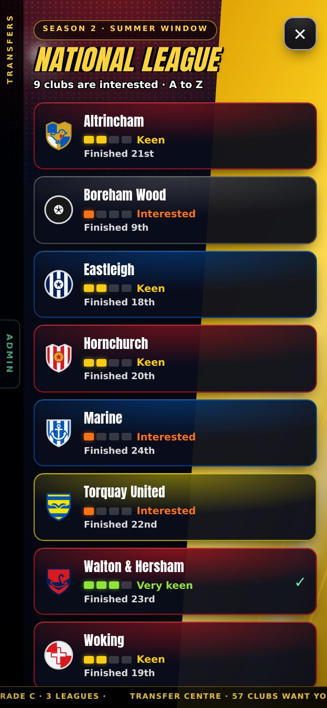
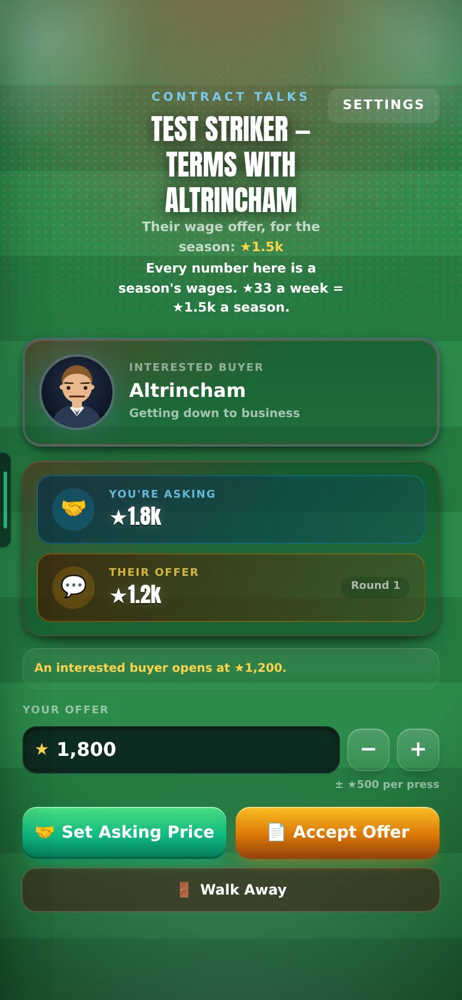
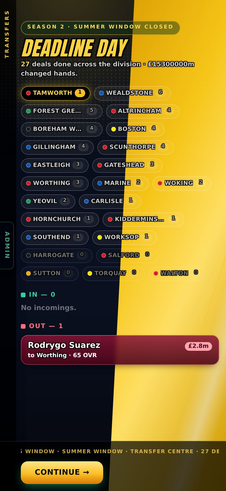

18 October 2026 · branch Mikey, merged to main (live) · since v0.16: the new transfer window, the world ageing system, real nation kits, fewer post-match videos · tests: 359 pass, 7 fail (the same 7 match tests that failed before this round)
S A B C Dyour season's grade decides which clubs want you
3 leaguesthe furthest up a club can come from, after an S season
35–41retirement ages (keepers 37–43)
211nations in their real home and away kits (was 15)
Check these
End of a season: the transfer window opens with your season's letter (S to D) and the clubs that want you
In the window: League → Club → Negotiate. Each list is a full-screen page, clubs A to Z
Talks: the numbers say a season's wages, with the week's figure beside it
A career below the Championship: only your own club's players get older
After a season in the Championship or Premier League: old players retire and young replacements arrive
An international match: both nations wear their real kit
After a match: 1 or 2 videos, never more
1 · The new transfer window
Before: "Find a new club" let you ask a league or club for a move in any week. Now clubs come to you, only in the summer window, the New Star Soccer way.
Clubs come to you, only at the end of a season
Before: you could ask for a move any week. Now: when the season ends, a list of clubs that want you opens. "Find a new club" is gone. The January window is switched off for now; its rules are kept for later. measured

Season 2, grade C: 57 clubs want you. League, Club, then Negotiate.
Your season gets a letter: S, A, B, C or D
The letter comes from goals and assists a game (forwards), your match rating (everyone) and a little for Star Man awards. It sets how many leagues up a club can come from: D your league and below, small clubs only · C your league · B one up · A two up · S three up. Fewer than 10 games: C at best. measured
A 19-year-old striker in the National League North
Letter
Highest league that wants him
Clubs
4 goals in 40, rating 6.3
D
National League South
1
12 in 40, 6.8
C
National League North
21
24 in 40, 7.3
B
National League
59
45 in 40, 7.9
A
League Two
86
100 in 44, 8.9
S
League One
97
Which clubs: size, finish and a gap in your position
Every club has an aim: its league's level, plus a little for being a big club and for finishing high. So Man United after 16th still aim higher than West Ham after 15th. A club wants you more if nobody there is better than you in your position, and almost never if three or more already are. measured
How keen each club is, not a promised role
The club list shows Desperate, Very keen, Keen or Interested with a four-step bar (was "Star man / First team", which the game never kept to). The offered wage is hidden until talks start. A European club gets a tag. measured

Pick a league: 9 + 24 + 24 = 57 clubs.

National League: 9 clubs, A to Z, how keen each is.
Talks: a club that walks away is gone for the window
The talks screen now says the numbers are a season's wages, with the week's figure beside them. The fee to your club is shown and kept in your history. Settings no longer covers the talks heading. measured

Talks: your ask against their offer.
In the Home screen's look
Home's tiles and bottom bar, with Deadline Day's gold title and ticker on top. Letters are coloured green (S) to red (D). It opens at once, with no animation. seen
Deadline Day's money total fixed
Before: the header read "£15300000m changed hands" (a £ sign and a raw number). Now it reads "★15.3m", and each fee uses ★ too. measured

Deadline Day round-up (still taken before the money fix).
The window shows next season's leagues added 19 Oct
Before: the window opened before promotion and relegation, so a club relegated from the Championship was still listed in the Championship. Now the clubs are moved first, the same way the end of season moves them, and marked Promoted or Relegated. The league below yours is always listed too (after an A season in the National League: North 23 clubs, South 24). measured
No club picked until you pick one added 19 Oct
The Club row says "Choose" and the club card appears after a pick. The "2 up" / "1 up" labels are gone: the league list says "Your league" on yours, and the card shows the league's name. measured
Contract talks in weekly wages added 19 Oct
Before: "Their wage offer, for the season ★17.6k". Now: "Their wage offer, per week ★382", and every number is a weekly wage. measured
Signing crash: a safety net added 19 Oct
An older save showed "Something went wrong" right after agreeing a move, twice. It did not happen on a fresh career (5 signings tried). If the 3D signing breaks it now falls back to the drawn signing, and the error page shows what broke (tap "What went wrong") so it can be fixed for good. not yet seen
Transfer fees are sized to your league added 19 Oct
Before: a National League striker on ★30 a week showed "Your club gets ★406m", and every club offered the same. The fee used a value formula built for FIFA ratings, and your star overall reaches its top (100) at about 5 stars. Now each league has its own price range and your stars place you in it; a club from a bigger league pays up to 30% more per league up. A 4.5-star 19-year-old: National League ★200k–310k · League Two ★590k–940k · Championship ★15m–23m · Premier League ★120m–140m (was about ★184m in every league). Your value in the League screen's squad list uses the same. measured
Transfers keep each player's ageing record
Found in a playtest: every summer the window rebuilt each player and dropped his retirement age and best rating. Players aged 40+ then never retired (Modrić was still playing at 45 after 5 seasons). Fixed; a test fails without the fix. measured
2 · The world ages
Before: only you got older. Now every player in the world ages, fades and retires, and a young replacement takes his place. Built to Mikey's 13 answers.
The top waits for you
Until you've played a season in the Championship or Premier League, only your own club ages. Everyone else (rest of the world, national teams, Ballon d'Or rivals) stays frozen. Then the whole world ages from that point. Saves whose world had already started ageing keep going as before. seen
Your club
Everyone else
Before your first Championship / Premier League season
ages
frozen
After it
ages
ages
What the playtest saw
Barrow, National League, 3 seasons: all 3,312 players at other clubs had the same age and rating; your team-mates got a year older each season (Rose 63 → 60 → 57 → 55). Then Derby, Championship, 5 seasons: the world woke and 142 replacements arrived.
Decline starts at 31 and is gentle
Players hold their rating up to 31, then fade at 0.6× Leo's speed. The best players fade at the same speed as everyone. A fading player never goes up. Keepers fade at 0.6× of an outfielder's speed. A player without a High or World Class flag no longer grows (Leo's growth is kept in the code for later). measured
Five ways to age, rolled once per career
Ages very well 10% · well 20% · normal 40% · badly 20% · very badly 10%. A 91-rated 28-year-old at 38: measured
ages very well
88
ages well
85
normal
83
ages badly
79
ages very badly
76
Leo's (before)
70
Retirement at 35–41, most around 38
Keepers go 2 years later. Nobody retires because his rating fell. A player who is already 40+ when he first ages (Ronaldo, 41) plays two more seasons, then retires. A younger player already past his age plays that first season, then retires. measured
age 35
6%
age 36
12%
age 37
20%
age 38
24%
age 39
20%
age 40
12%
age 41
6%
The replacement
Every retired player is replaced at his club by a new player:
aged 16–20, any age equally likely;
rated his club's level −13 to +2, any value equally likely;
from the retired man's country, with a name from that country;
in the retired man's position, with a 25% chance of a second nearby one and 5% of a third (a right back may also play left back or centre back);
flags from the retired man's best rating in the game: 87+ → World Class 80%, High 19%; 83–86 → World Class 10%, High 60%; below 83 → World Class 1%, High 5%;
without a flag he still grows on Leo's numbers, for now.
seen
Sample replacements from the playtest
Solomon Okonkwo, Hull City, 18, CB, 74, Nigeria, World Class
Bojan Režić, Hoffenheim, 21, CAM/CM, 76, Croatia
Kenneth Seys, Napoli, 16, CM, 83, Belgium
Each career has its own history
Different careers retire different players and bring in different replacements. It costs nothing on the servers and does not grow the save: replacements take the retirees' places one for one (squads in a save: 194 KB on day one, 247 KB by season 21).
3 · Other
Real kits for all 211 nations
Before: 15 nations had a kit and the rest wore grey. Now every nation wears its real home and away kit (shirt, second colour, pattern, sleeves, shorts, socks), taken from Wikipedia's kit pictures and checked by eye. The Club Data page has a Clubs | International switch. measured
Post-match: 1 or 2 videos, never more
Before: the limit was per batch, so your match got 2 and the round-up of other matches 2 more (2–4 real videos plus 1–2 grey look-alike cards). Now each match has 1 or 2 at random (the highlights always). Other matches' goals stay on the Feed's England tab only. A post whose goal wasn't recorded is text only. Over 30 test matches: 1 video on 19, 2 on 11. measured
Known issues
The leagues slowly get strongerLOW
Replacements grow on Leo's numbers, so by season 21 the average first team rises: Premier League 78.8 → 83.1, Championship 69.3 → 74.4, League Two 57.6 → 62.0. Without that growth the leagues would weaken instead (78.8 → 77.9). To be fixed with the new replacement growth plan. measured
No squad screen for other clubsLOW
Tapping a club in the League table does nothing, so other clubs' replacements can only be seen on team sheets. seen
The manager-sacked screen's CONTINUE did not close in the test browserLOW
Possibly only in a browser without graphics. Not seen on a phone.
Next
How replacements grow (Mikey's own plan, to replace Leo's numbers)
January window back on, when wanted
Decide whether new framing and headers/volleys become the game (still test switches)
Previous versions
v0.16 · 2026-10-13 · Gameplay review: fewer feed videos that wait for ▶, upright goal posts, achievements unlock and level you up at once; test switches for new framing and headers/volleys
v0.15 · 2026-10-13 · International football: call-ups, duty mode, watching on TV, scorers for every goal; the Ballon d'Or counts club and country (Star Man out); casino scandals; name banks for 211 nations
v0.14 · 2026-10-09 · Real Premier League shots playable as test chances; Chances (testing): about 9 Kane-style highlights a match, Old still the default
v0.13 · 2026-10-08 · Play-off, cup and European round-ups with animated brackets; the real UEFA knockout; two-legged League Cup semis; ±25% wage when your club goes down or up; relegation day
v0.12 · 2026-10-08 · The ovation's hugs, dap-ups, pat and claps made in Blender; the farewell's 3D ovation checked in a real match
v0.11 · 2026-10-08 · 3D standing ovation; centre-back Golden Boot and day-one line-ups fixed; more assists; clearances, negotiations and Relations reworked
v0.10 · 2026-10-04 · Relationships rebuilt: bars that move slowly, one game per relationship, happiness decides recovery, no Sponsors bar; injuries switched off
v0.9 · 2026-10-03 · XP rebuilt (slower start, XP by the minute, no double pay) and the XP Book to edit every amount; 3D garden, North/South 2026/27, Club Data
v0.7 · 2026-09-30 · A new 1-10 star career rating separate from overall, 7 boots, dearer Style, 2 training sessions a week, restyled training, contract terms
v0.6 · 2026-09-27 · Five levels of every boot and lifestyle item, a moving ball on the strike screen, commentary that barely repeats, new chants
v0.5 · 2026-09-26 · How you get picked: win your shirt from a better-rated rival, form over 3 games, subs when the score says, cup rotation
v0.4 · 2026-09-25 · Training rebuilt the New Star Soccer way: 30 fixed levels, three tries, stars raise the skill; pace, vision and free kick matter in matches
v0.3 · 2026-09-25 · What you see on the pitch matches where people stand: nearer players and the ball drawn right, corners from the flag; trophy pictures, instant energy modes, feed likes
v0.2 · 2026-09-22 · Energy master plan: in-match energy modes, a real ticking clock, half-time KIB cans, rest days, tougher fatigue rules
v0.1 · 2026-09-21 · Economy, fame and reputation rebuild: Premier League wages to ★100k, fame levels, one reputation number, 50-season careers